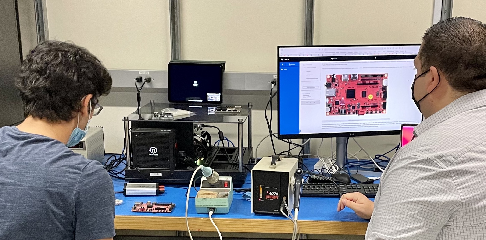
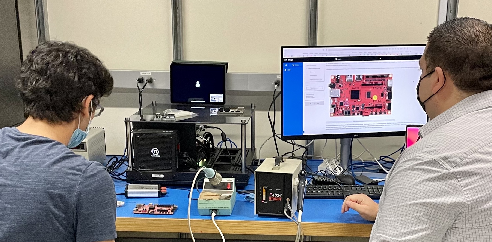
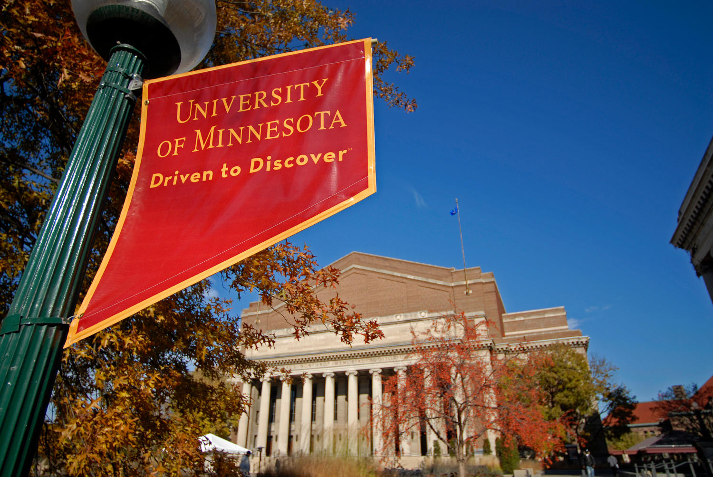
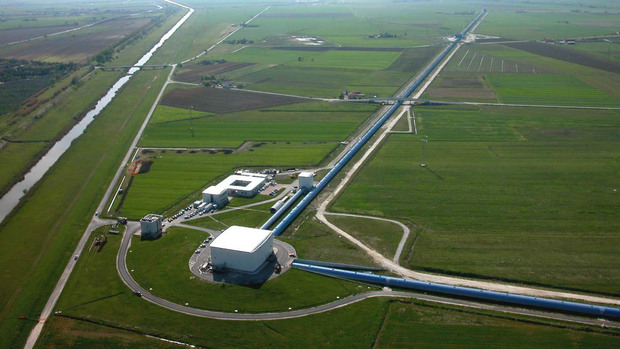
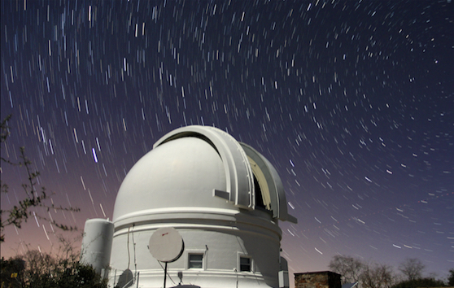
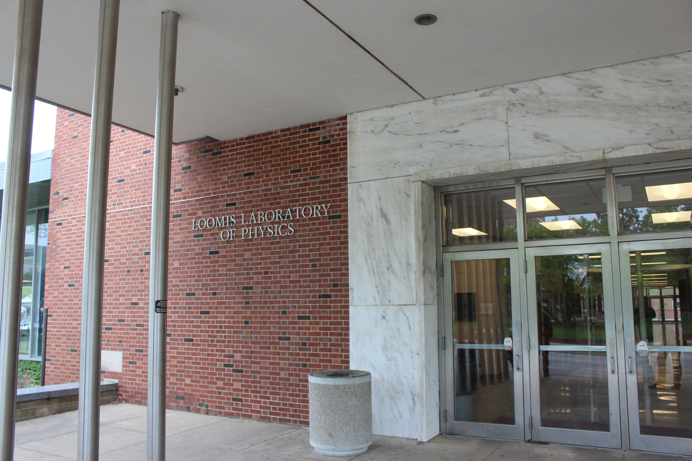
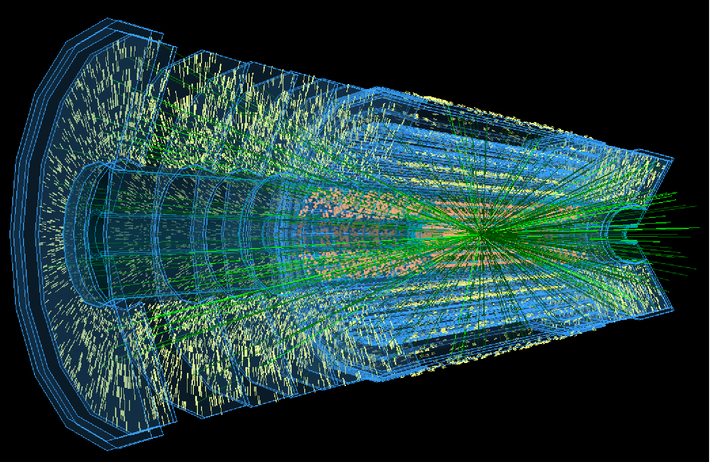
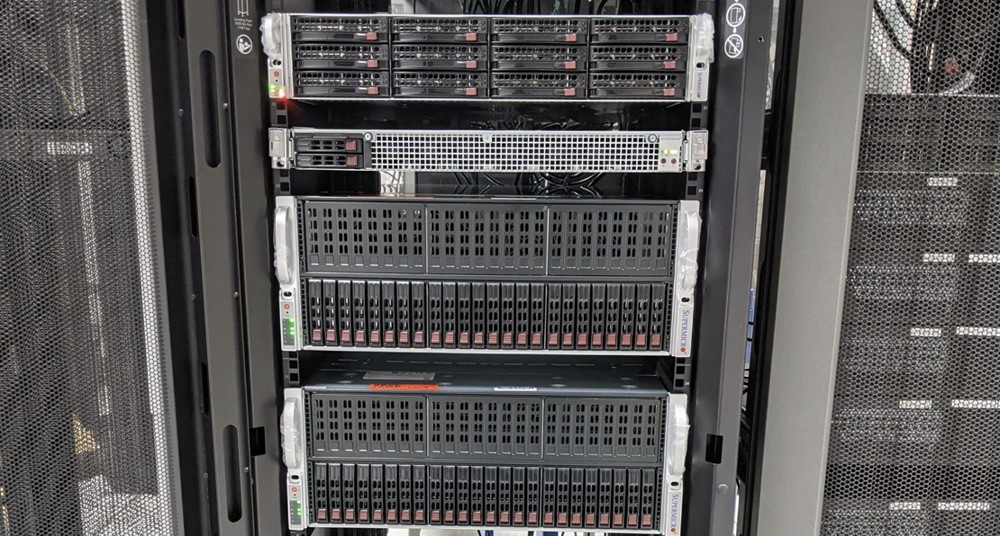

Get Involved
There are research fellowships and employment positions for you to be involved in A3D3. This page summarizes the latest opportunities.
Administration
Postdoctoral Research Fellows
Postbaccalaureate Research Fellows
Participating sites and possible projects for 2022-2023 (Apply through Academic Jobs Online):- UC San Diego
 

- Project Description: Postbacc fellows will work together with mentors to develop the python-based hls4ml and other AI-hardware codesigns software tools for implementing, compressing, and quantizing neural network algorithms on FPGAs with sub-microsecond inference latency. Fellows will also apply these techniques to collider physics including regression and classification tasks related to jets and missing transverse energy as well as general anomaly detection in the CMS Phase-2 Level-1 trigger.
- Mentors: Javier Duarte
- Desired Competencies (may be learned on the job): Coding in python; machine learning; FPGA firmware development; high-level synthesis; collider physics; trigger; technical communication
- Location: La Jolla, CA
- University of Minnesota
  - Project Description: Postbacc fellows will work together with mentors to develop machine learning applications applied to both gravitational-wave detector such as the Laser Interferometer Gravitational-wave Observatory and optical telescope data such as that from the Zwicky Transient Facility to detect both gravitational waves and their optical counterparts.
- Mentors: Michael Coughlin
- Desired Competencies (may be learned on the job): Coding in python (and javascript); machine learning; databases; time-domain astronomy; technical communication
- Location: Minneapolis, MN
- University of Illinois at Urbana-Champaign
  - Project Description: Postbacc fellows will work together with mentors to develop fast reconstruction methods and applications based on machine learning to improve event triggering in high-energy physics and multi-messenger astrophysics experiments (e.g. neutrinos). Successful candidates will have the opportunity to collaborate with the Illinois interdisciplinary centers ICASU and CAII in their research.
- Mentors: Mark Neubauer and Deming Chen
- Desired Competencies (may be learned on the job): Coding in python; machine learning; ; FPGA firmware development; high-level synthesis; particle physics; detector triggering; technical communication
- Location: Champaign-Urbana, IL